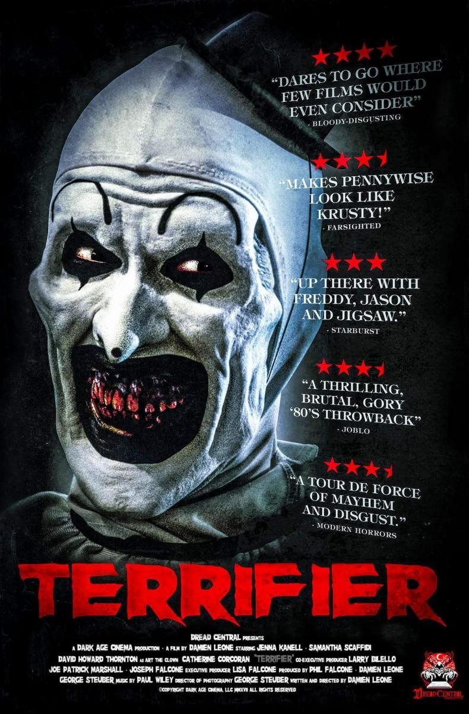

Terrifier
En la noche de Halloween, tras una fiesta, Tara y Dawn entran en una pizzería. Tras ellas llega un payaso inquietante y grotesco que hiela la sangre a Tara. Las chicas no tardan en descubrir que es un psicópata sádico que pretende matarlas.
2016 - 1hs 26min
¿Dónde Ver?
Actualmente, esta película está disponible en las plataformas: